Leistungen
Glasreinigung, die mehr kann als nur sauber aussehen
Schutz für Möbel und Böden, streifenfreie Ergebnisse und ein sauberes Gesamtbild: So arbeitet Glasfein bei jedem Auftrag.
Fensterreinigung inkl. Rahmen
Glasreinigung inklusive Rahmen, Falz sowie Fensterbänken innen und außen.
Wintergärten
Komplette Glasflächenreinigung inklusive Profile, auf Wunsch auch mit Osmoseverfahren.
Terrassendächer
Reinigung unabhängig von Material und Höhe, bei Bedarf mit Sicherungsgeschirr.
Sprossenfenster
Saubere Kanten, klare Ecken und keine Sisyphusarbeit mehr für Sie.
Photovoltaikflächen
Schonende Reinigung für Werterhalt und Leistung Ihrer Solar- und PV-Anlagen.
Individuelle Sonderwünsche
Regenrinnen, besondere Glasflächen oder spezielle Herausforderungen besprechen wir persönlich.
Unser 4G-Prinzip
Vier Gründe, warum Glasfein im Kopf bleibt
Das 4G-Prinzip ist kein Marketing-Satz, sondern die Art, wie das Team jeden Auftrag abliefert.
Günni & Steffi
Feste Ansprechpartner, kurze Wege und ein Service, der persönlich statt anonym funktioniert.
Garantie
Wenn etwas nicht passt, kommt Glasfein wieder. Volle Zufriedenheit ist Teil des Auftrags.
Glanz
Handarbeit, bewährte Mittel und ein bewusster Umgang mit Chemie sorgen für klare Ergebnisse.
Glasflächen
Von der Fensterfront bis zur Terrassenüberdachung findet Glasfein für fast jede Glasfläche eine Lösung.
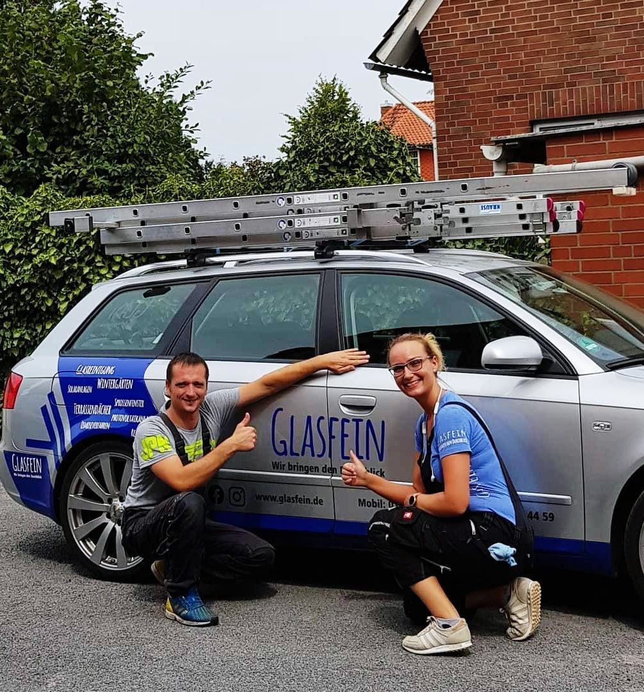
Über Glasfein
Der erste Eindruck zählt. Vor allem bei Glasflächen.
Glasfein wurde 2017 gegründet und hat aus echter Leidenschaft einen Beruf gemacht. Was mit einem ungewöhnlichen Weg aus Büro und Chemielabor begann, ist heute ein eingespielter Glasreinigungs-Teamservice für Privatkunden.
Verbindlichkeit, Zuverlässigkeit und sichtbare Ergebnisse sind die Säulen der Zusammenarbeit. Genau deshalb verlassen sich heute mehr als 500 Privatkunden auf Glasfein.
Fenster, Wintergärten und Terrassendächer
Schutz von Möbeln und Böden im Arbeitsbereich
Persönlicher Kontakt statt Callcenter
Einsatzgebiet rund um Nienburg, Steyerberg, Hannover und Minden
Bei der Arbeit
Ein paar Eindrücke aus dem Glasfein-Alltag
Vorher-Nachher-Momente, saubere Flächen und genau die Art von Sorgfalt, die man sehen kann.
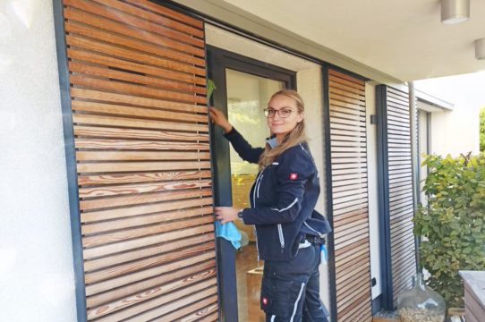
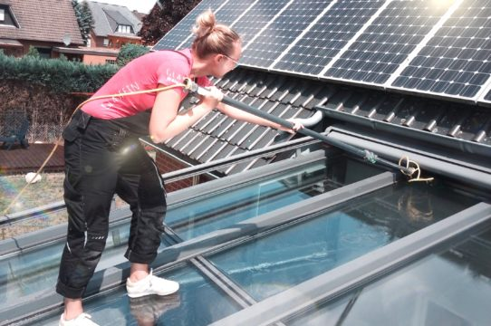
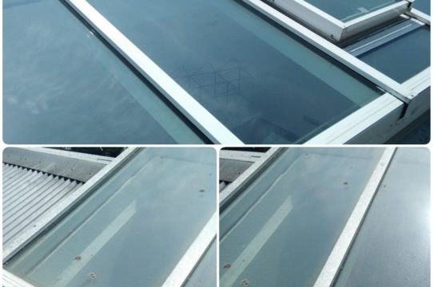
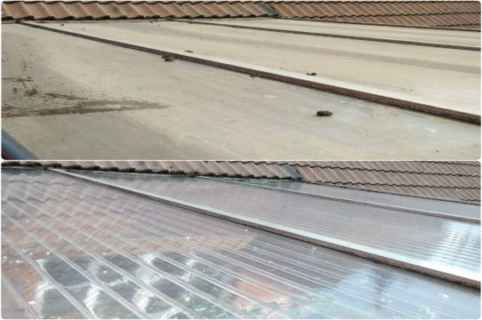
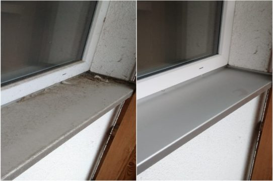
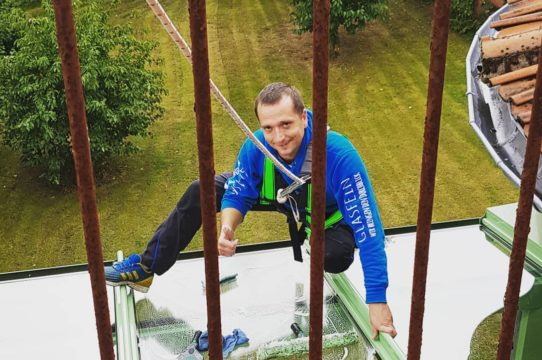
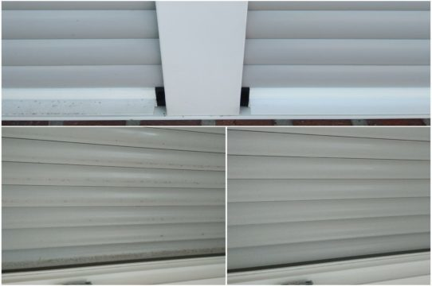
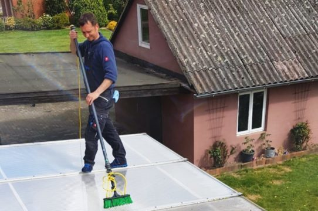
Das Team
Vier Menschen. Ein Anspruch: klare Verhältnisse.
Nicht anonym, nicht austauschbar, sondern ein Team, das man kennt und gern wieder beauftragt.
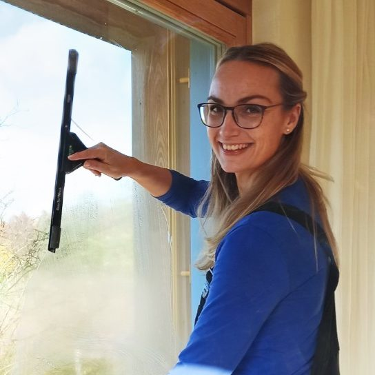
Steffi
Die gute Seele mit Buchhaltungsgeschick und einem Auge für saubere Abläufe.
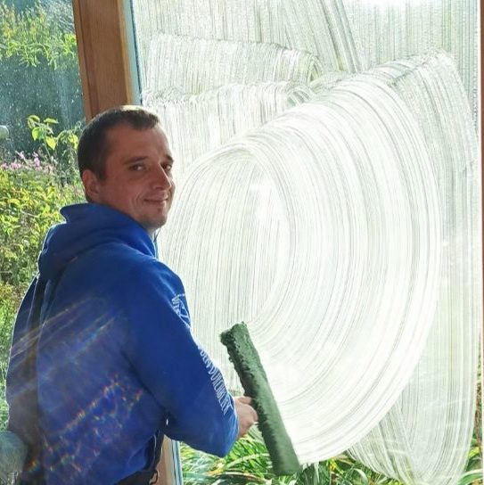
Günni
Das Organisations- und Angebotsgenie, wenn es um Planung und Verlässlichkeit geht.
Julian
Der absolute Allrounder für saubere Ergebnisse und einen reibungslosen Einsatz.
Ulf
Der gewissenhafte Spezialist, wenn Sprossenfenster und Detailarbeit gefragt sind.
Kundenstimmen
Warum Glasfein weiterempfohlen wird
Die wichtigsten Aussagen kommen nicht vom Team selbst, sondern von den Menschen, die es beauftragen.
„Zuverlässigkeit steht für mich an erster Stelle und genau das beweist Glasfein bei jedem Auftrag erneut.“
Matthias, Privatkunde
„Aus Dienstleistern wurde über die Jahre ein Team, auf dessen Besuch ich mich jedes Mal freue.“
Sabine, Privatkundin
„Für jede Herausforderung und jeden Sonderwunsch nimmt sich das Team ausreichend Zeit.“
Daniel, Privatkunde
Schnell zum Termin
Sie möchten wieder klare Sicht statt grauem Schleier?
Häufig gefragt
Die wichtigsten Fragen vorab
In welcher Region arbeitet Glasfein?
Vor allem im Raum Nienburg/Weser, Steyerberg sowie im Dreieck Hannover-Minden-Nienburg.
Reinigt ihr nur Fenster?
Nein. Auch Wintergärten, Terrassendächer, Sprossenfenster, Photovoltaikflächen und individuelle Glasflächen gehören dazu.
Wie wird bei Ihnen gearbeitet?
Sauber, geschützt und strukturiert: mit Abdeckungen im Arbeitsbereich, festen Ansprechpartnern und einem klaren Qualitätsanspruch.
Was passiert nach einer Anfrage?
Das Team meldet sich persönlich zurück, bespricht Ihre Wünsche und findet eine passende Lösung für Ihren Auftrag.
Kontakt
Wenn wir nicht gerade auf einem Dach stehen, melden wir uns persönlich zurück.
Nutzen Sie das Formular, rufen Sie direkt an oder schreiben Sie eine Mail. Glasfein bespricht jede Anfrage individuell und ohne Umwege.